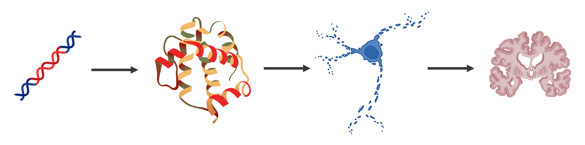
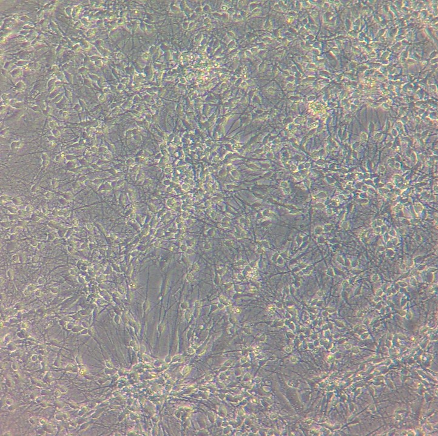
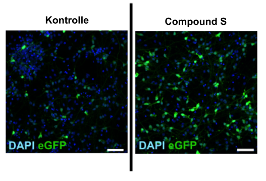
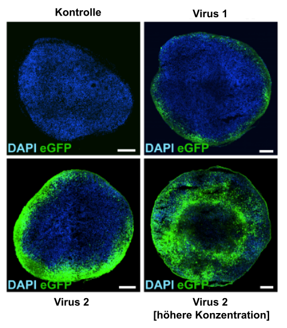

Viren sind seit jeher unsere unsichtbaren Feinde. Sie verursachen harmlose Erkältungen, aber auch lebensgefährliche Krankheiten. Doch ausgerechnet diese winzigen Eindringlinge können zu mächtigen Verbündeten werden.
Es ist ein ganz normaler Montagmorgen. Du stehst auf, doch deine Beine fühlen sich schwer und steif an, als hättest du Gewichte daran gebunden. Mit der Zeit verschlimmern sich die Symptome. Treppensteigen wird zur Qual, kleine Hindernisse bringen dich mehr und mehr ins Wanken. Dann kommen die Krämpfe: Deine Muskeln blockieren, ohne dass du etwas dagegen tun kannst. Was mit scheinbar alltäglichen Beschwerden begann, entpuppt sich nach einer langen Zeit der Ungewissheit als eine seltene, aber unheilbare Krankheit: spastische Paraplegie. Das ist eine Erkrankung des Nervensystems, bei der Nervenzellen nach und nach absterben – ausgelöst durch ein einziges defektes Gen.
Kleines Gen, grosses Problem
Unsere Gene lassen sich mit Bauplänen für Proteine vergleichen. Diese sorgen dafür, dass die Abläufe in unseren Zellen richtig funktionieren. Ist ein Gen defekt, fehlt das entsprechende Protein oder es funktioniert nicht mehr richtig. Bei der spastischen Paraplegie führt genau das dazu, dass Nervenzellen absterben (Abb. 1). Sobald viele Zellen betroffen sind, treten Symptome wie Steifigkeit in den Beinen oder Krämpfe auf. Die Symptome können zwar behandelt werden, jedoch kann bisher die Ursache noch nicht bekämpft werden.

Abb. 1. Vereinfachtes Prinzip der Krankheitsentstehung bei der spastischen Paraplegie. Ein defektes Gen führt zu einem defekten Protein, was zum Absterben von Nervenzellen führt. Das löst Symptome wie Bewegungsstörungen aus.
Ein mögliches Mittel zur Heilung der Erkrankung ist die Gentherapie. Hier wird das defekte Gen durch eine gesunde Variante ersetzt. So würde das Absterben der Zellen gestoppt werden. Doch Nervenzellen nehmen fremde Gene nicht von allein auf. Sie brauchen einen „Boten“, der die Gene sicher in die Zellen transportiert. Doch wie könnte ein solcher Bote aussehen?
Vom Feind zum Helfer
Viren sind bekannt als winzige Übeltäter. Sie schleusen ihre eigenen Gene in unsere Zellen ein, die diese ablesen und so neue Viren produzieren. Das führt zu Krankheiten wie Erkältungen oder Grippe. In der Gentherapie nutzt man diesen Mechanismus zu unserem Vorteil: Die Virusgene werden durch das gesunde Gen ersetzt, das die Erkrankung heilen kann. So transportieren die Viren nicht mehr ihre eigenen Erbinformationen in die Zellen, sondern die intakte Variante.
Wichtig ist, dass die Viren uns nicht krank machen. Deswegen verwendet man für den Gentransport Adeno-assoziierte Viren (AAVs). Diese kommen in der Natur vor, verursachen aber bei uns Menschen keine Symptome und sind daher ideale Genboten.

Abb. 2. Nervenzellen unter dem Mikroskop. Die runden Strukturen sind die Zellkörper, und die langen, feinen Strukturen die Nervenfasern.Wer ist der beste Genbote?
Bevor die AAVs bei Patient*innen eingesetzt werden können, müssen sie gründlich im Labor getestet werden. Am Deutschen Zentrum für Neurodegenerative Erkrankungen (DZNE) lassen sich Nervenzellen aus induzierten pluripotenten Stammzellen züchten (Abb. 2). An ihnen wird untersucht, welche AAV-Typen Gene am zuverlässigsten übertragen.
Dazu brachte man die Bauanleitung für ein grün fluoreszierendes Protein in die Viren ein. Infizierte Zellen begannen daraufhin grün zu leuchten, was einen guten Erfolgsindikator darstellt. Das Ergebnis: Zwei AAV-Typen waren besonders effektiv. Diese habe ich in meiner Masterarbeit genauer untersucht.
Ein Stoff, der Viren stärker macht
Damit die Therapie wirksam ist, müssen möglichst viele Nervenzellen das gesunde Gen erhalten. Mehr Viren einzusetzen, wäre zwar naheliegend, belastet aber die Leber stark und kann im schlimmsten Fall zu Leberversagen führen.
Deshalb habe ich untersucht, ob sich die Wirkung auch durch zusätzliche Substanzen steigern lässt. Und tatsächlich: Ein Präparat, das wir „Compound S“ nennen, konnte die Effektivität deutlich erhöhen (Abb. 3). Gleichzeitig erwies es sich als ungiftig für Nervenzellen. Das macht große Hoffnung, dass die Viren in Kombination mit diesem Medikament künftig in der Gentherapie eingesetzt werden können.

Abb. 3. Compound S steigert die Anzahl der Zellen, die von den Viren infiziert werden. Zellkerne sind blau gefärbt und infizierte Zellen grün. Links wurden nur die AAVs dazugegeben, und nur wenige Zellen leuchten grün. Rechts wurden AAVs und Compound S dazugegeben, und die Infektionsrate stieg.Eine Nervenzelle ist noch kein Gehirn
Bisher wurden die AAVs nur an einzelnen Nervenzellen getestet. Doch ein ganzes Gehirn ist viel komplexer: Es besteht aus zahlreichen Zelltypen und eng vernetzten Strukturen. Um den Ansatz unter realistischeren Bedingungen zu prüfen, züchtete ich sogenannte Organoide. Das sind „Mini-Gehirne“, die wichtige Eigenschaften eines menschlichen Gehirns nachbilden (Abb. 4).
Als ich die Viren auf die Organoide gab, zeigte sich, dass nicht alle gleich gut in die dreidimensionalen Strukturen eindrangen (Abb. 5). Während der erste erfolgreiche AAV-Typ nur oberflächlich wirkte, konnte der andere auch tiefere Zellen erreichen. Bei höherer Virusmenge wurden fast im ganzen Organoid Zellen infiziert. Das ist ein erster Hinweis darauf, dass dieser Virustyp auch im menschlichen Gehirn wirksam sein könnte.
 Abb. 4. Ein Organoid unter dem Mikroskop.
Abb. 4. Ein Organoid unter dem Mikroskop.

Abb. 5. Die Organoide wurden mit den beiden besten AAV-Typen infiziert. Virus 1 konnte nur Zellen infizieren, die am äußeren Rand des Organoids lagen. Virus 2 konnte tiefer in das Organoid eindringen, und mit einer höheren Viruskonzentration konnten fast im ganzen Organoid Zellen infiziert werden.Die Versuche zeigen: Viren können nicht nur einzelne Nervenzellen erreichen, sondern auch in komplexere, gehirnähnliche Strukturen vordringen. Gleichzeitig macht der Einsatz zusätzlicher Substanzen wie Compound S die Anwendung sicherer, da die Effektivität der Viren deutlich erhöht werden kann. Das ist ein erster Schritt vom Labor hin zur Therapie im Menschen.
Ein kleines Virus, ein grosser Schritt Richtung Heilung
Ein winziges Virus wird also zum Werkzeug zur Heilung von Erkrankungen, deren Diagnose bislang ein lebenslanges Schicksal bedeutete. Noch ist es zwar ein weiter Weg von den Laborversuchen bis zur Behandlung von Patient*innen, doch erfolgreiche Gentherapien bei anderen Krankheiten zeigen, dass dieser Ansatz realistisch ist.
Die Erkenntnisse aus unserer Forschung können daher nicht nur für die spastische Paraplegie relevant sein, sondern auch den Weg für neue Behandlungen weiterer Erkrankungen des Gehirns ebnen. So könnte Betroffenen in Zukunft wieder ein Stück Lebensqualität zurückgegeben werden.
Ein paar Begriffe ...
Adeno-assoziierte Viren (AAVS) – AAVs sind kleine, nicht krankmachende Viren,
die häufig als „Boten“ in der Gentherapie benutzt werden. Sie können Gene gezielt
in Zellen einschleusen und zeichnen sich durch eine hohe Sicherheit aus.
Gentherapie – Gentherapie bezeichnet die Behandlung von Krankheiten durch
gezielte Veränderungen des Erbguts. Dies kann durch Einfügen, Korrigieren oder
Ausschalten von Genen geschehen, um fehlerhafte oder fehlende Proteine zu ersetzen
und die Ursache einer Erkrankung zu beheben.
Induzierte pluripotente Stammzellen (iPSCs) – iPSCs sind künstlich hergestellte
Stammzellen. Sie entstehen, wenn im Labor Körperzellen (z.B. Hautzellen) durch bestimmte
Faktoren „reprogrammiert“ werden. Dabei ähneln sie embryonalen Stammzellen: Sie können
sich unbegrenzt teilen und sich in nahezu jeden Zelltyp entwickeln – zum Beispiel in
Nervenzellen. iPSCs sind ein wichtiges Werkzeug für die Therapieentwicklung – ganz ohne
die ethischen Probleme embryonaler Stammzellen.
Organoide – Organoide sind dreidimensionale Zellstrukturen, die aus Stammzellen
gezüchtet werden können und bestimmte Strukturen und Funktionen von Organen nachahmen.
Spastische Paraplegie – Die spastische Paraplegie ist eine seltene, erblich
bedingte Erkrankung des Nervensystems, bei der Schäden an den Nervenbahnen im Rückenmark
entstehen. Sie schreitet langsam voran und führt über Jahre hinweg zu zunehmenden Bewegungsstörungen.
Zum Weiterlesen
- Baker, M. (2009). Stem cells: Fast and furious. Nature, 458(7241), 962–965. doi:10.1038/458962a.
- Cerneckis, J., Cai, H., & Shi, Y. (2024). Induced pluripotent stem cells (iPSCs): Molecular mechanisms of induction and applications. Signal Transduction and Targeted Therapy, 9(1), 1–26. https://doi.org/10.1038/s41392-024-01809-0.
- Lopez-Gordo, E., Chamberlain, K., Riyad, J. M., Kohlbrenner, E., & Weber, T. (2024). Natural Adeno-Associated Virus Serotypes and Engineered Adeno-Associated Virus Capsid Variants: Tropism Differences and Mechanistic Insights. Viruses, 16(3), 1–48. https://doi.org/10.3390/v16030442.